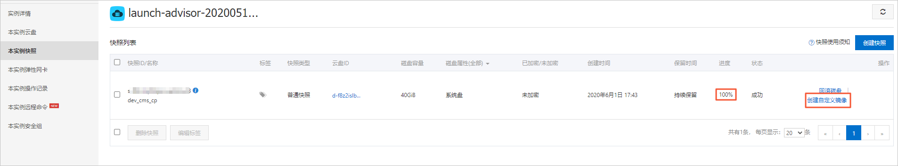
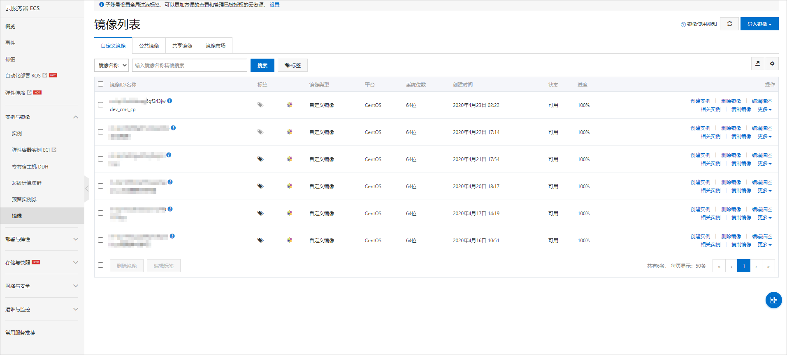

阿里云ECS服务器搭建PbootCMS企业网站
注：本文来自阿里云官方，版权归阿里云所有！
在购买ECS服务器后，系统会创建一个ECS实例。每一个ECS实例对应一台已购买的云服务器。您可以通过电脑上自带的终端工具访问云服务器，进行应用部署和环境搭建。
1. 在ECS实例列表页面，选择实例的所属地域。
2. 找到目标实例，然后在操作列选择【更多】> 【密码/密钥】 > 【重置实例密码】，然后在弹出的对话框设置ECS实例的登录密码。
3. 在弹出的页面，单击【立即重启】使新密码生效。
4. 在ECS实例列表页面，复制ECS实例的公网IP地址。
5. 打开电脑上的命令行终端工具。
Windows：Powershell。
MAC：Terminal。
Windows用户请检查系统中是否安装有SSH工具。检查方法：
a. 在终端中输入命令ssh -V。
ssh -V
如果显示SSH版本则表示已安装，如下图所示。
b. 如果未安装，请下载安装OpenSSH工具。
6. 在终端中输入连接命令ssh root@[ipaddress]。
您需要将其中的 ipaddress 替换为您的ECS服务器的公网IP地址。例如。
命令显示结果如下。
7. 输入yes，然后输入云服务器的登录密码。
登录成功后会显示如下信息。

本教程使用Apache作为后端服务器，并在云服务器上创建一个MySQL数据库用来存储数据。
1. 在ECS服务器上，执行以下命令安装Apache及其扩展包。
yum -y install httpd httpd-manual mod_ssl mod_perl mod_auth_mysql
返回类似如下图结果则表示安装成功。
2. 参考以下操作在ECS服务器上搭建一个MySQL数据库。
a. 执行以下命令下载并安装MySQL。
wget http://dev.mysql.com/get/mysql57-community-release-el7-10.noarch.rpmyum -y install mysql57-community-release-el7-10.noarch.rpm yum -y install mysql-community-server
b. 执行以下命令启动MySQL数据库。
systemctl start mysqld
c. 执行以下命令查看MySQL初始密码。
d. 执行以下命令，登录数据库。
mysql -uroot -p
e. 执行以下命令修改MySQL默认密码。
说明：
新密码必须同时包含大小写英文字母、数字和特殊符号中的三类字符。请妥善保存数据库密码。
ALTER USER 'root'@'localhost' IDENTIFIED BY 'NewPassWord1.';
f. 执行以下命令创建数据库。
create database pbootcms;
g. 输入exit退出数据库。
exit
3. PbootCMS是使用PHP语言开发的CMS系统。参考以下操作安装PHP环境。
执行以下命令，安装PHP。
yum -y install php php-mysql gd php-gd gd-devel php-xml php_openssl
在完成环境部署后，参考以下操作搭建企业网站。
1. 在ECS服务器上，执行以下命令，安装Git。
yum -y install git
2. 执行以下命令下载PbootCMS源码文件。
cd ~ && git clone https://gitee.com/hnaoyun/PbootCMS.git
3. 执行以下命令将安装包拷贝到Apache的wwwroot目录下。
cp -r PbootCMS/* /var/www/html/
4. 执行以下命令修改站点根目录文件权限。
chmod -R a+w /var/www/html
5. 执行以下命令向MySQL数据库中导入CMS的初始数据。
说明：在执行命令前，请将命令中的NewPassWord1.替换为您设置的数据库密码。
sql_file="/var/www/html/static/backup/sql/"$(ls /var/www/html/static/backup/sql/) && mysql -uroot -pNewPassWord1. pbootcms < $sql_file
6. 执行以下命令修改CMS系统数据库配置。
说明：在执行命令前，请根据参数说明替换您的数据库配置。默认您只需要更改数据库密码即可。
cat > /var/www/html/config/database.php << EOF<?phpreturn array( 'database' => array( 'type' => 'mysqli', // 数据库连接驱动类型: mysqli,sqlite,pdo_mysql,pdo_sqlite 'host' => '127.0.0.1', // 数据库服务器 'user' => 'root', // 数据库连接用户名 'passwd' => 'NewPassWord1.', // 数据库连接密码 'port' => '3306', // 数据库端口 'dbname' => 'pbootcms' //数据库名称 ) ); EOF
7. 执行以下命令启动Apache HTTP服务。
systemctl start httpd
8.返回ECS控制台，在ECS实例列表页面，单击已创建的ECS实例ID链接进入ECS详情页。在左侧导航栏，单击 【本实例安全组】，然后单击安全组的ID链接查看安全组配置。
9. 在浏览器地址栏输入云服务器的公网IP地址，进入CMS系统首页。
系统后台默认访问路径为http://<ECS公网IP地址>/admin.php。默认账号为admin，密码为123456。
至此您已完成企业网站的搭建，您可以根据公司的需求自定义企业网站的内容。
企业网站搭建完成后，您可以将配置环境通过自定义镜像制作成环境副本保存下来。方便您将已搭建好的企业网站通过自定义镜像的方式快速部署到其他云服务器上。
说明：使用快照服务会产生少量费用，详情请参见 快照计费方式 。
1. 登录ECS管理控制台。
2. 如果您是初次使用快照，参考以下操作开通快照服务。
a. 在左侧导航栏，单击【存储与快照】 > 【快照】。
b. 在弹出的通知对话框中，阅读开通声明，然后单击【确定】开通快照。
3. 在ECS实例列表页，单击目标实例的管理链接，进入实例详情页。
4. 在【本实例云盘】页面，单击【创建快照】。
5. 填写 快照名称，然后单击【创建】。
6. 在本实例快照页面，等待快照创建完成，然后单击【创建自定义镜像】。

7. 填写自定义镜像名称和自定义镜像描述，然后单击【创建】。
8. 在【镜像列表】页可以看到刚才创建的自定义镜像。

下一篇：没有了！